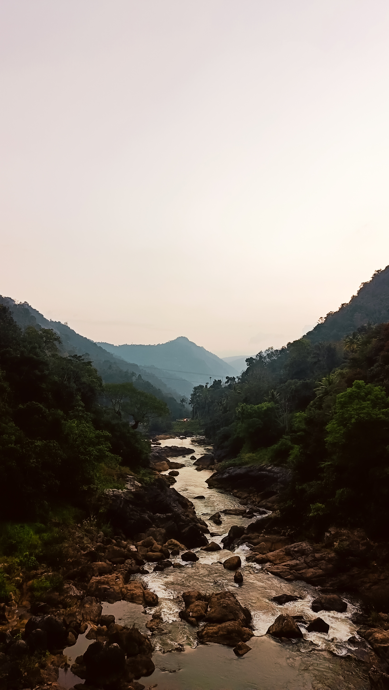
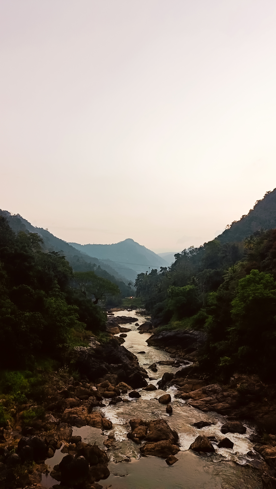

Hello everyone....! My name is Sonu K Joseph, I am a Kerala based travel and lifestyle photographer passionate about capturing the beauty of the world through my lens. From landscapes and architecture to portraits and wildlife, I seek to tell authentic stories that inspire curiosity and connection. Every photo is a moment frozen in time, inviting viewers to explore and feel the world differently.


 



For collaborations & inquiries reach out at: sonukjofficial@gmail.com